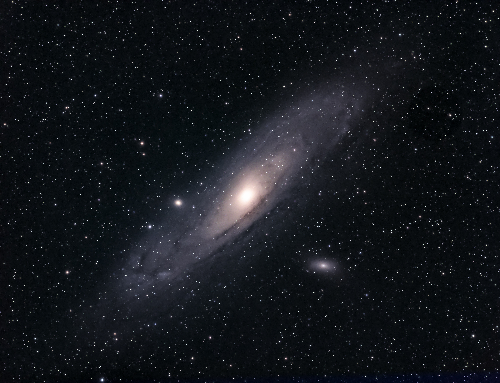

Интересные факты о космосе:
- Вступление;
- Безграничная Вселенная;
- Черные дыры;
- Галактика Млечный Путь;
- Поиск жизни;
- Путешествия в космос.
При желании вы можете выкупить у нас права на этот сайт по электронному адресу приведенному в конце статьи. Готовы продать за небольшую сумму. ЦЕНА ПО ДОГОВОРЕННОСТИ.
Вступление

Космос - это безграничная пространственная область, которая окружает нашу планету Землю и содержит в себе огромное множество небесных объектов, включая звезды, планеты, галактики, астероиды, кометы и многие другие. Он представляет собой невероятно разнообразную и загадочную среду, вызывающую у человека бесконечное восхищение и жажду познания. Изучение космоса и его тайн является одной из самых увлекательных исследовательских областей. Оно позволяет нам расширить наши знания о Вселенной, ее происхождении, структуре и развитии. Наблюдения с помощью космических телескопов и миссий, а также космических аппаратов, позволяют нам рассмотреть далекие галактики и понять, как формируются звезды и планеты.
Космос, не только является источником научных открытий и познания, но и вдохновляет нас на философские размышления о нашем месте во Вселенной. Мы задаем себе вопросы о смысле жизни, возможности других цивилизаций в космосе, и о том, что может ждать человечество в будущем. Кроме того, исследование космоса также имеет практическое значение: разработка новых технологий для космических миссий способствует развитию нашей технологической базы и научным открытиям, которые могут найти применение не только в космосе, но и на Земле.
Космос олицетворяет человеческое стремление к познанию и исследованию неизведанных горизонтов. Он вдохновляет нас мечтать, исследовать и преодолевать грани человеческого потенциала. С каждым новым открытием и миссией в космос мы приближаемся к пониманию самых глубоких загадок Вселенной и своей роли в ней.
Факт 1: Безграничная Вселенная

Безграничная Вселенная - это концепция, которая предполагает существование бесконечного множества вселенных, включая нашу собственную. Эта идея возникла в рамках научных и философских размышлений о природе космоса и его возможных формах организации. Гипотеза о Безграничной Вселенной базируется на предположении, что наша Вселенная, которую мы наблюдаем, является одной из множества множества параллельных или возможно даже несвязанных между собой вселенных. Эти вселенные могут различаться в своих фундаментальных свойствах, таких как физические константы, законы природы или начальные условия. bKh976W8R Существует несколько теорий и моделей, которые пытаются объяснить и описать Безграничную Вселенную. Одной из них является теория множественных вселенных, или "Мультивселенная теория". Согласно этой теории, каждая возможная комбинация физических свойств и законов могла бы реализоваться в отдельной вселенной. В таком случае, Безграничная Вселенная представляет собой совокупность всех возможных вселенных, охватывающих все варианты и их комбинации. Другая концепция, связанная с Безграничной Вселенной, это теория инфляции. Согласно этой теории, во время ранней стадии развития нашей Вселенной произошло быстрое расширение пространства-времени, которое могло привести к образованию множества "пузырей" или регионов с различными физическими свойствами. Каждый из этих регионов мог бы быть собственной вселенной в рамках Безграничной Вселенной. Важно отметить, что Безграничная Вселенная является пока что гипотезой и не имеет прямых экспериментальных подтверждений. Однако она продолжает вызывать интерес у ученых и философов, и исследования в этой области продолжаются. Безграничная Вселенная открывает широкий спектр возможностей для размышлений о множестве других цивилизаций, различных формах жизни и даже альтернативных версиях самих себя. Эта концепция вызывает много вопросов о природе реальности и нашем месте в ней, и исследования Безграничной Вселенной помогают нам расширять наше понимание окружающего мира и его возможных проявлений.
Факт 2: Черные дыры

Черная дыра - это область космического пространства, в которой гравитационное притяжение настолько сильно, что ничто, даже свет, не может покинуть её. Это происходит из-за свертывания массы в очень маленький объем. Черные дыры образуются в результате гравитационного коллапса массы звезды, когда звезда исчерпывает свои ядерные реакции и не может противостоять собственной гравитации. Масса черной дыры сосредоточена в точке, называемой сингулярностью, которая имеет бесконечную плотность и бесконечное гравитационное притяжение. Событийный горизонт - это граница черной дыры, которую ничто не может преодолеть, включая свет. Внутри событийного горизонта гравитационное притяжение настолько сильно, что никакие известные физические законы не могут описывать происходящие там события.Черные дыры могут иметь различные массы. Существуют также сверхмассивные черные дыры, находящиеся в центрах галактик. Предполагается, что они возникают из аккреции вещества и слияния меньших черных дыр. Сверхмассивные черные дыры считаются ключевыми компонентами галактических ядер и играют важную роль в эволюции галактик. Изучение черных дыр является активной областью научных исследований в астрофизике. Астрономы изучают их свойства, взаимодействия с окружающей средой, процессы аккреции и выброса материи, а также их влияние на эволюцию галактик. Одним из способов изучения черных дыр является наблюдение рентгеновского и гравитационного излучения, а также моделирование черных дыр с помощью компьютерных симуляций.
Факт 3: Галактика Млечный Путь

{kind=link}
Млечный Путь – это галактика, в которой находится наша Солнечная система. Эта галактика – одна из многих, которые образуют Вселенную. Давайте рассмотрим Млечный Путь более подробно:
1. Структура и размеры: Млечный Путь представляет собой спиральную галактику. Он состоит из огромного числа звезд, газа, пыли и тёмной материи. Диаметр Млечного Пути составляет приблизительно 100 000 световых лет, а толщина в некоторых местах может достигать 1 000 световых лет.
2. Звёзды и солнечная система: Наша Солнечная система находится на окраине Млечного Пути, примерно на расстоянии около 27 000 световых лет от его центра. Млечный Путь содержит миллиарды и миллиарды звёзд, включая солнце, вокруг которого вращаются планеты, включая Землю.
3. Спиральная структура: Млечный Путь имеет характерную спиральную структуру с распределением звёзд и облаков газа в виде спиральных рукавов. Наша Солнечная система находится в одном из таких рукавов, который называется Орионовой рукавицей.
4. Чёрные дыры и галактический центр: В центре Млечного Пути находится сверхмассивная чёрная дыра, известная как Сагиттариево А. Эта чёрная дыра имеет массу, эквивалентную нескольким миллионам масс Солнца. Вокруг неё обнаружены множество звёзд и газов, вращающихся в орбитах.
5. Тёмная материя и тёмная энергия: Большая часть массы Млечного Пути состоит из тёмной материи и тёмной энергии, которые остаются загадкой для учёных. Тёмная материя – это инвизибельное вещество, которое не излучает свет и не взаимодействует с обычным веществом, но оказывает гравитационное воздействие. Тёмная энергия, с другой стороны, оказывает воздействие на расширение Вселенной.
Млечный Путь – это захватывающий объект исследований в астрономии, и его изучение помогает нам лучше понять происхождение, структуру и будущее нашей галактики и всей Вселенной.
Факт 4: Поиск жизни в космосе

Поиск жизни в космосе — один из самых увлекательных исследовательских направлений в современной астрономии и науке о космосе. Ответ на вопрос, существует ли жизнь за пределами Земли, является одной из самых фундаментальных загадок, которая занимает умы ученых, философов и публики в целом. Важно понимать, что поиск жизни в космосе происходит на разных уровнях и с использованием разнообразных методов:
1. Исследование солнечной системы: Марс, Европа (луна Юпитера), Титан (луна Сатурна) и другие космические объекты исследуются с помощью марсоходов, орбитальных аппаратов и потенциальных миссий. Поиск следов воды, органических соединений и других признаков подходящих условий для жизни является ключевой целью.
2. Экзопланеты: С появлением телескопов, способных обнаруживать планеты вокруг других звезд, ученые обращают особое внимание на экзопланеты, находящиеся в "голубой зоне' - области вокруг звезды, где температура позволяет существование воды в жидком состоянии. Поиск химических признаков, таких как атмосферные газы, также может дать нам подсказки о наличии жизни.
3. Поиск сигналов разумной жизни: Поиск радиосигналов из космоса — активный способ попытаться обнаружить другие цивилизации, которые могут использовать радиоволновую связь, такой как проект SETI (Поиск интеллектуальных цивилизаций во Вселенной).
Факт 5: Путешествия в космос

Путешествия в космос - это исследование и путешествие в космос, вне Земли. Они представляют собой уникальные миссии, которые позволяют человеку исследовать другие планеты, спутники, астероиды и глубины космоса. История космических путешествий началась во второй половине 20 века. Первым искусственным спутником Земли стал Спутник-1, запущенный Советским Союзом в 1957 году. Этот исторический момент открыл эру космической гонки между СССР и США, которая впоследствии привела к первым пилотируемым полётам в космос. В 1961 году Юрий Гагарин стал первым человеком, отправившимся в космическое путешествие на корабле "Восток-1". После этого были выполнены многочисленные космические миссии, включая пилотируемые полёты на луну и исследование других планет и их спутников. Одной из самых значимых миссий в истории космических путешествий была миссия "Аполлон-11", в ходе которой в 1969 году Нил Армстронг и Эдвин Олдрин стали первыми людьми, ступившими на поверхность Луны. Это событие открыло новую эру исследования лунных поверхностей и подготовки для путешествий на другие планеты. Сегодня космические путешествия продолжаются. Международная космическая станция (МКС) является постоянно населенной лабораторией в космосе, где астронавты проводят эксперименты в невесомости и изучают воздействие космоса на организмы. Кроме того, современные космические аппараты и роверы исследуют поверхность Марса и других планет, отправляются к астероидам и даже изучают удаленные области нашей галактики с помощью телескопов в космосе. Космические путешествия имеют огромное значение для расширения нашего понимания Вселенной и поиска ответов на основные вопросы о происхождении жизни, возможности существования других цивилизаций и будущем человечества в космосе. Они также предлагают нам технологические и научные прорывы, которые могут применяться на Земле в различных областях, от медицины до энергетики и связи. Космические путешествия являются важным шагом в исследовании и понимании нашего места во Вселенной, и они продолжают вдохновлять и удивлять людей всего мира.
Краткое описание статьи
| Безграничная Вселенная | Черные дыры | Галактика Млечный путь | Поиск жизни | Путешествия в космос |
|---|---|---|---|---|
| Это предполжение существования бесконечного множества вселенных, включая нашу(Млечный путь). | Это область космического пространства, в которой гравитационное притяжение настолько сильно, что ничто, даже свет, не может покинуть её. | Это галактика, в которой находится наша Солнечная система. | Это исследовательская область, которая привлекает внимание ученых и любителей космоса по всему миру. | Это исследование и путешествие в космос. |
Все права защищены. Дата публикации 10/09/2023. Версия 0.7.2. Переведено на Английский с помощью Google Translate. Все фотографии были взяты с источника Unsplash.nocopyright ©